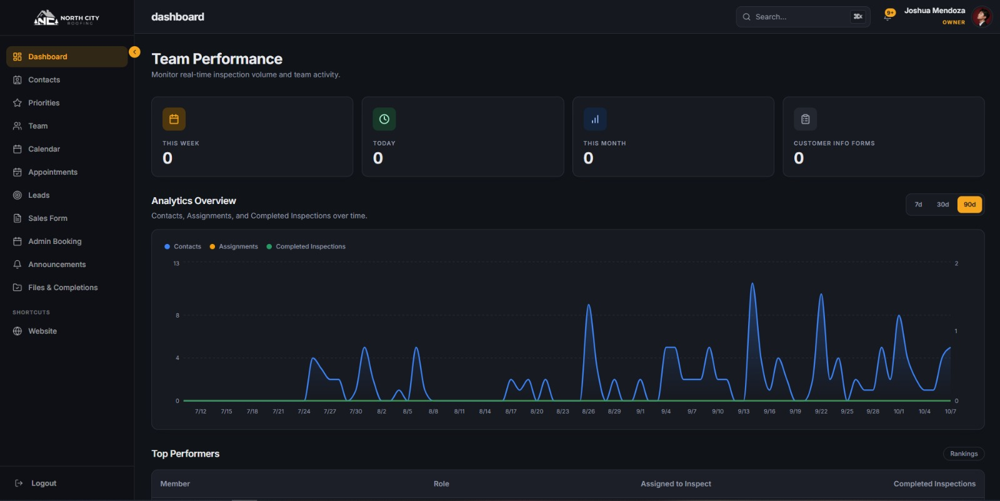
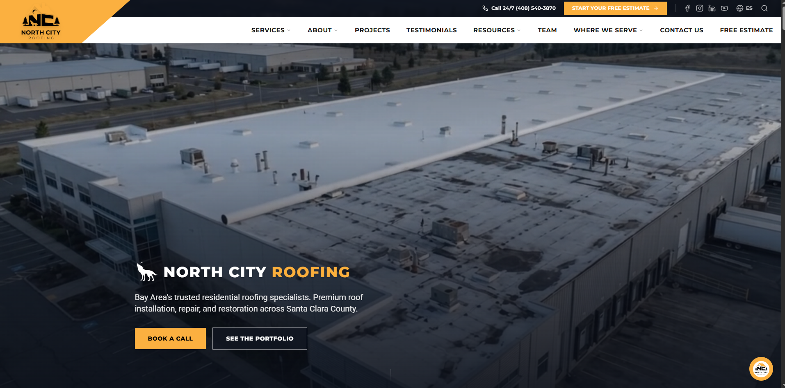
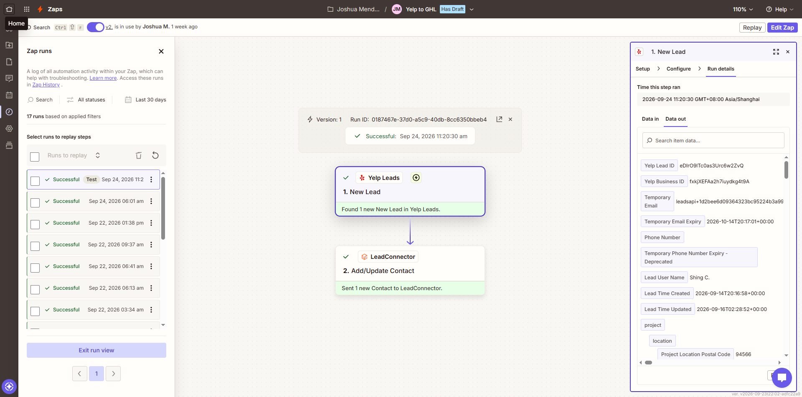
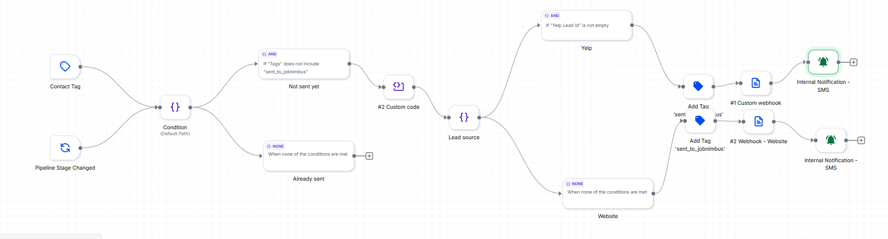
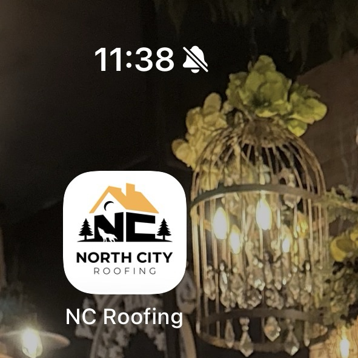
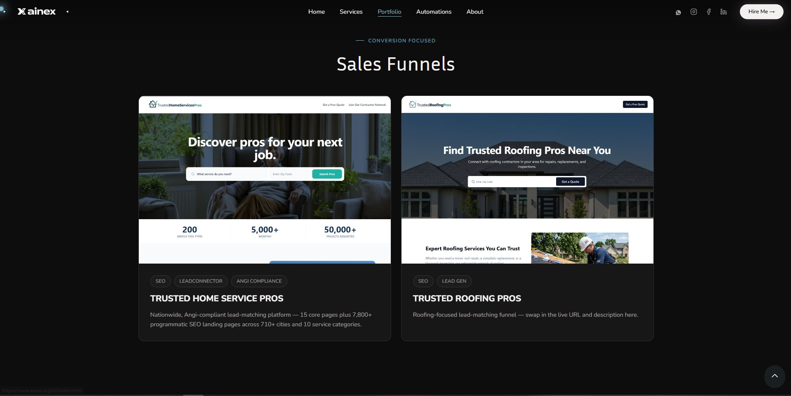

Website
Create the contact and opportunity, assign a team member, tag by source, property, and service, fast-track emergencies and financing, and alert the team. An AI voice agent calls urgent-repair leads to finish intake.
GoHighLevel expert, AI automation and web developer. I design high-converting websites, scalable ad systems and automated workflows that turn traffic into paying clients — for dental, automotive, HVAC, home services, education and coaching since 2022.
How a project starts
Based on the North City Roofing project. Here's how it started, and what came next.
We're a roofing company in the Bay Area. Leads come in from our website and Yelp, but too many go cold before anyone calls back.
Got it. I'll connect every lead source into one pipeline, answer each lead in seconds, and give your team an app to run inspections from the roof.
All of that? Perfect. When do we start? 🙂
Now. Scroll down, I'll show you exactly what I built.
Case Study 01 · Oct 2026
An AI-powered lead engine and an installable operations app took a Bay Area roofer from five scattered tools and missed leads to one connected pipeline.
Live at dashboard.northcityroofing.com · private client app

The problem
Someone still had to follow up, find a time, and book the estimate by hand.
Many arrived after hours, often with no phone number. If no one replied fast, the homeowner hired the next roofer.
Leads were copied into JobNimbus by hand, where sales runs its jobs. Slow, and easy to get wrong.
A CRM, paper forms, a separate calendar, an assignments spreadsheet, and a folder of PDFs no one could find.
Forms filled out on rooftops were retyped later. Nobody knew which jobs were worth pursuing for weeks.
Repeated CRM syncs made the contact list unusable.
Layer 1 · Lead engine
17 live GoHighLevel workflows and 100+ custom fields handle each lead from the website or Yelp, day or night.
Eight services (roofing, repairs, gutters, cleaning, skylights, inspection, roof coating, and rejuvenation), plus a one-tap toggle for financing interest. On submit a booking calendar opens right away, so the homeowner leaves with an appointment instead of a "we'll call you."

A Zapier integration creates or updates each new Yelp lead as a GoHighLevel contact, with the Yelp Lead ID, the requested service, and the homeowner's full project answers. A bot engages each lead immediately, even after hours.

Create the contact and opportunity, assign a team member, tag by source, property, and service, fast-track emergencies and financing, and alert the team. An AI voice agent calls urgent-repair leads to finish intake.
Engage every Yelp lead instantly, recover leads that go quiet or don't book, confirm bookings, and follow up on won jobs.
Keep GoHighLevel and the team app in sync: contacts, calls, inspections, and assessments.
Deep dive
Qualified leads reach the sales team's job system with zero retyping and zero duplicates.

12345sent_to_jobnimbus tag, the flow stops.Layer 2 · Operations app
The owner runs the business from a command center, and inspectors run assessments from the roof. Click a phone to watch it full size.

Add to Home ScreenInstallable
The dashboard is an installable web app on iOS and Android, with its own branded icon. It opens full screen and needs no app store or update queue.
North City Roofing · Mobile
Built mobile-first for the field team. Drag the rail, or hover its edges to let it glide. Click any screen to open it, then use the arrows to flip through.
Not just a website
Every business runs differently, so every app I build is different too: priorities, team views, live analytics, whatever the job needs. This one is running on North City Roofing's field team's phones right now.
Built for a roofing company here. The same system works just as well for dental, HVAC, coaching, or whatever runs your business.
Technical highlights
Upserts run in 500-row batches on a unique contact ID, with deduplication before every write and a guard against overlapping runs. 43,000 duplicates gone for good.
Chart counts run in Postgres, so the dashboard stays instant at any contact volume.
Mapped across GoHighLevel, the dashboard, and JobNimbus.
Each assessment sends the full scope, the PDF link, the qualification answer, and the inspector's identity in one request.
Supabase realtime keeps every view current without a refresh.
Tag guards make sure no lead is ever sent to JobNimbus twice.
Results
What's next
Built end to end: automation architecture, product design, front-end engineering, CRM integration, and database optimization.
Real results
Not promises. Live numbers from systems currently running for clients.
Selected work
Websites, AI agents and the automation systems running behind them.
Valle Del Sol Cabo · Featured automation
Every OpenTable reservation at Torote, the on-site restaurant for Valle Del Sol's development, flows into GoHighLevel and triggers a branching WhatsApp, email, and SMS sequence. It's one of several event-driven systems running behind valledelsolcabo.com →

/contacts/upsert.
Fires on a 7-day, 24-hour, and 2-minute countdown to every reservation. It branches on the guest's reply ("Yes, Walk Me Through" / "No, Just Dinner" / timed out) and fans out into WhatsApp confirmations, backup emails, and an internal team notification the moment a guest responds. Delivery is tracked end to end on every channel.
Every new reservation instantly creates or updates the guest's contact record in GoHighLevel, tagged, timestamped, and ready for the sequence to fire without a single manual step.
Appointwise · Featured automation
A conversational AI agent built entirely inside GoHighLevel's conversation builder. It qualifies leads, answers questions, handles objections, and books the call without a human ever touching the conversation.

Automations in action
Automated Google review requests and missed-call text-backs. Both fire instantly, 24/7, with zero manual work on your end. Tap the phone to watch the demo.
The moment a job is marked complete, the customer gets a text asking for a review, with a direct link straight to the Google listing. No app required.
Miss a call and the caller instantly gets a text back, so no lead ever goes cold just because nobody picked up in time.
Full-funnel marketing
Landing pages engineered to convert, Meta & Google Ads driving traffic into them, and every platform (Meta, GoHighLevel, Zapier, Make, custom webhooks) wired together so no lead ever falls through the cracks.
Meta & Google Ads campaigns with AI-generated creatives targeting the exact buyer.
High-converting funnel pages built to capture the click and drive one clear action.
Meta Lead Ads, Conversions API, and pixel events synced straight into the CRM pipeline.
Zapier, Make, and custom webhooks connecting GHL to any tool a business already runs on.
Follow-up runs itself until the lead is qualified, booked, and sitting in the pipeline.



Three funnels, one frame. Hover to pull each one forward.
Behind the scenes
The internal system that keeps a whole team in sync, from a new lead hitting the CRM to a human replying in Slack.
Automation library
Screenshots of live GoHighLevel, Make, Zapier and Supabase builds. Click any one to open it full size, then use the arrows to flip through.
3D website highlights
Scroll-driven 3D builds for local service businesses, recorded live in desktop view. Pick an industry, or click the screen to watch it full size.
Recent websites built
Every video is a real screen recording. Click one to watch it full size.
The archive
Filter the rail, drag it, or hover the edges. Every card opens the live site.
AI Voice Agent
An AI agent that picks up every call, day or night, weekends, holidays, mid-job, and actually gets things done instead of taking a message. It's live right now on the Meridian Plumbing demo.
agent live · answering calls 24/7
What I do
Six core disciplines, ten services, one goal: systems that turn traffic into booked, paying clients.
FAQ
Where I've worked
Current role · 2026–present
Behind the brand
Logo in motion
Reveal animation, concept render, and the clean mark.
Founder · 2026
Everything on this page, now as an agency. ainex designs and builds AI-powered automations, CRMs, and web experiences for founders who want to move faster without adding headcount.
Antipolo, Rizal · Philippines
I build websites, funnels and automations that keep working while you sleep.
I've been building GoHighLevel systems, websites and ad funnels since 2022, for dental clinics, roofers, HVAC and home service companies, restaurants, academies and coaches across the US, Canada, Mexico, Ireland, the UK and Australia.
Before that, I served a full-time mission for The Church of Jesus Christ of Latter-day Saints (2023–2025) as an Administrative Assistant, managing schedules and communication for leadership teams, keeping confidential records, and training new volunteers. Earlier, I worked as a Marketing Researcher with Bloom, Clear Insights (Lehi, Utah, remote), recognized for consistently exceeding quality and productivity standards.
That's where the habits come from: organized, detail-oriented, deadline-driven, and clear communication in English (plus basic Spanish).